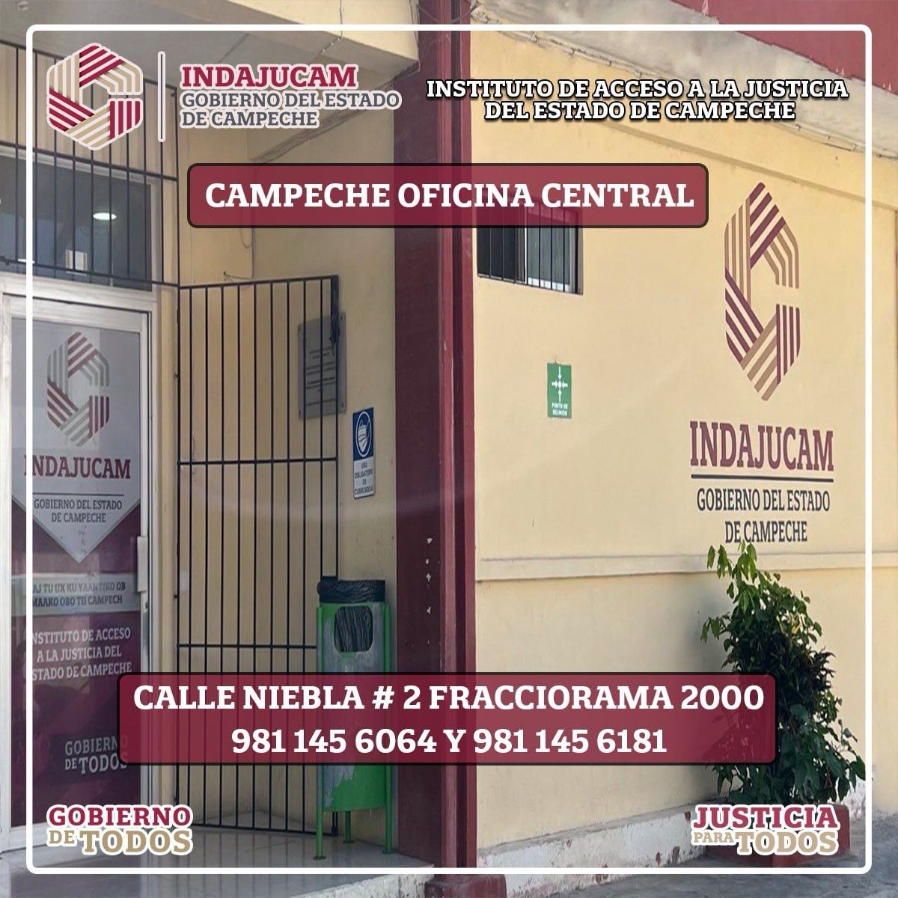

Asesores Materia Administrativa

Genesis Del Carmen Sierra May
Servicio y Atención a Servidores Públicos
Atención a servidores públicos canalizados para su defensa y asesoría.
Requisitos:
Requisitos específicos previos. Debiste ser canalizado con nosotros y la autoridad administrativa competente deberá enviar oficio para requerir al asesor.
NOTA: Gastos derivados del procedimiento corren por cuenta del usuario.
Horario: Lunes a Viernes 8:00 a.m. - 3:30 p.m.